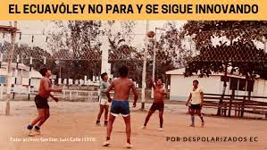

El ecuavóley, también conocido como vóley ecuatoriano, comenzó a jugarse a mediados de la década de 1920 en Ecuador. Se considera que este deporte se originó en la provincia de Manabí. La versión ecuatoriana del vóley tiene reglas ligeramente diferentes en comparación con el vóley tradicional y ha ganado popularidad en el país, convirtiéndose en un deporte nacional. El ecuavóley se juega en una cancha más pequeña y con reglas únicas que lo distinguen de otras variantes del vóley. Desde su inicio, el ecuavóley ha sido una parte importante de la cultura deportiva ecuatoriana.
 |
Un grupo de jóvenes entusiastas, amantes del vóley pero deseosos de disfrutar del juego en el entorno playero, ideó reglas y adaptaciones específicas. Modificaron las dimensiones de la cancha y ajustaron las reglas para que el juego se adaptara a la arena, dando origen a un deporte ágil y dinámico que capturó la esencia relajada y festiva de la región costera. Estos primeros jugadores, con creatividad y pasión, sentaron las bases del Ecuavóley, que con el tiempo se consolidaría como un deporte emblemático no solo en las playas de Manabí, sino en todo Ecuador.
La creación del Ecuavóley se remonta a la década de 1920, en las pintorescas playas de la provincia de Manabí, Ecuador. En este período, un grupo de jóvenes apasionados por el vóley buscaba una variante del juego que se adaptara a las condiciones únicas de la arena y reflejara el espíritu relajado y playero de la región. La necesidad de adecuar el vóley convencional a este entorno llevó a la creación de un deporte innovador que capturaría la esencia misma de la costa ecuatoriana.
Los creadores del Ecuavóley ajustaron las reglas y dimensiones de la cancha para que encajaran perfectamente con la arena de las playas. La cancha más pequeña y las reglas adaptadas proporcionaron un ritmo más rápido y dinámico al juego. Estas modificaciones no solo permitieron jugar en la arena, sino que también dieron lugar a un estilo de juego distintivo que se convertiría en la marca registrada del Ecuavóley. Con el tiempo, el deporte se extendió desde las costas de Manabí hacia otras regiones del país, ganando adeptos y consolidándose como una actividad deportiva auténticamente ecuatoriana.
Desde su creación, el Ecuavóley ha evolucionado y se ha arraigado en la identidad deportiva de Ecuador. Lo que comenzó como un juego playero en la década de 1920 se ha transformado en un fenómeno nacional que trasciende las fronteras geográficas y sociales. Hoy en día, el Ecuavóley no solo se practica en las playas, sino también en parques, clubes y eventos a lo largo y ancho del país. Este deporte, con su historia única y su capacidad para unir a la comunidad, se ha convertido en una expresión distintiva de la cultura ecuatoriana.
El Ecuavóley, un deporte único y emblemático de Ecuador, tiene sus humildes orígenes en las soleadas playas de la provincia de Manabí durante la década de 1920. Un grupo de jóvenes entusiastas, ansiosos por adaptar el vóley convencional a las condiciones playeras, idearon un juego que capturara la esencia de la costa ecuatoriana. Con dimensiones de cancha más pequeñas y reglas específicas, el Ecuavóley nació como una fusión de destreza, creatividad y la pasión por el juego bajo el cálido sol del Pacífico.
|  |
Con el paso de los años, el Ecuavóley ha evolucionado de un juego playero a un símbolo arraigado en la identidad deportiva de Ecuador. Ha trascendido las costas y se ha convertido en un deporte nacional practicado en todo el país. Sus reglas únicas, la camaradería que fomenta y su capacidad para reunir a comunidades han consolidado al Ecuavóley como más que un simple deporte; es una expresión de la cultura ecuatoriana que sigue creciendo en popularidad, tanto en eventos recreativos locales como en competiciones a nivel nacional e internacional.